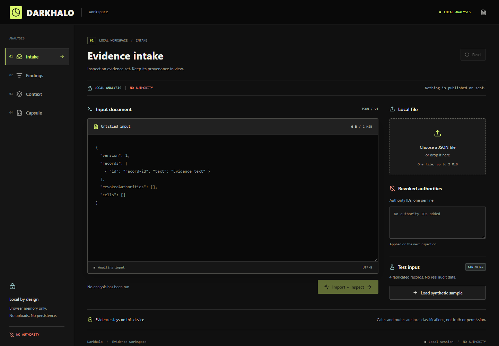
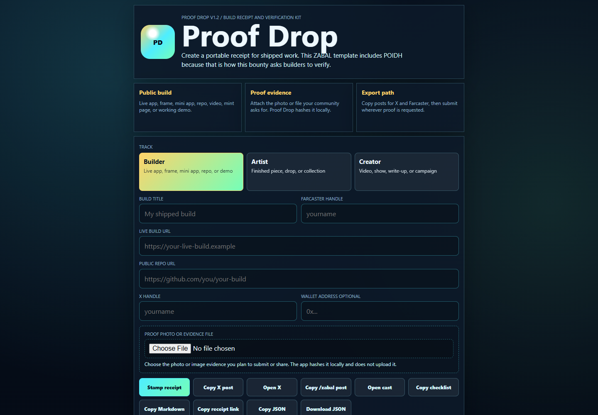

Proof Drop
Hash an evidence file locally and export a portable build receipt. Includes the original ZABAL event template.
Tools for AI work that survives the chat. Explore practical pieces of a larger effort: portable context, bounded work, inspectable results, and useful business software.
Actual interface captures, not concept artwork. Samples and rehearsals remain labeled as such.


Hash an evidence file locally and export a portable build receipt. Includes the original ZABAL event template.

The independently operated ZOL project merged a DreamLoops integration and Bonfire memory adapter. Those pull requests establish merged contributions, not an endorsement or a claim about its current runtime.
32 projects
Open contracts for persistent AI agents: assignments, Capsules, DreamLoops, claims, receipts, and deterministic validation.
Multi-agent decision lab with visible votes, uncertainty, provenance, receipts, and human execution gates
Agent identity and service-discovery profiles using an operator-owned ENS-compatible namespace
Compile quorum-approved, safety-reviewed agent proposals into bounded engineering work packets
A Pi Network companion interface with simulated mining and illustrative prices, not a live mining service.
Explore web, API, and mobile workspaces for GPS-enabled camera fleet management.
Hash an evidence file locally and export a portable build receipt. Includes the original ZABAL event template.
Public song drops with machine-readable metadata, evidence receipts, and release pages
Builder-facing recording and opportunity scout for ZABAL workshops and creator discovery
Versioned operating loops and portable capability Capsules for persistent agent work.
Explore agent tool workouts and portable practice evidence. Practice is not independent qualification.
A paper-trading and market-research arena. Paper results are not realized returns or trading authority.
The companion product site for the Whale Intelligence League research project.
Portable contracts, verification hooks, and transports for evidence exchange between independent DreamNet organisms.
Inspect repositories, packages, and agent bundles offline with digest-bound findings. Not a safety guarantee.
A Temporal-based lab for durable assignments and compensation. See the fork and upstream provenance.
Git-native manifests, append-only events, provenance rules, and rebuildable indexes for DreamNet data repositories.
Evidence-backed claim production with credentialed workers and independent verification factories.
Open contracts for persistent, accountable agent institutions and portable verified knowledge
Portable paper-research contracts and a Warper Keeper bridge, with no wallet or trade execution.
Explore evidence-linked events and agent-ready exports; assess each source for freshness.
Event coordination, rehearsal, and recovery tools. Event use is not established by repository existence.
A fork documenting the ZAO orchestration layer. Public playbooks are not its private executable runtime.
A fork of the ZAOstock project. Preserve upstream ownership and follow the upstream contribution process.
Rehearse merchant disruptions, substitutions, and owner-reviewed responses with example business state.
Compile repository metadata and raster assets into a storyboard and local FFmpeg video. Uploading remains unimplemented.
No matching projects. Try another name or type.
Choose a product for your task. Each project keeps its own setup, license and release lifecycle; connections to other products are optional and must be documented.
These links open public GitHub conversations. Never include credentials, private source, customer data or unredacted logs. General questions.